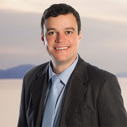

Uma sessão individual por videochamada, para você ou para quem você quer bem, começar a viver com ânimo, convivência e propósito.
Agendar a Sessão de Abertura Entrar na Roda de PapoA rotina perde o sentido. Faltam pessoas para conversar. E, na família, quem quer ajudar muitas vezes não sabe por onde começar.
Viver bem se constrói com pequenas práticas: contar a própria história, ter com quem conversar, se mexer, se divertir, ter alguém por perto. É isso que fazemos juntos, no seu ritmo.

Matheus Pupim é formado em Educação Física, Acupuntura, Constelação Familiar e Coaching.
Já atuou como professor de natação em academias e como personal trainer.
Há vinte e três anos vem atuando na área do bem-estar, transformando pessoas e famílias com o seu trabalho.
Encontro semanal ao vivo, curto, em grupo: conversa guiada e troca de histórias. Cada encontro traz um exercício simples, como a Linha da Vida.
Entrar na Roda de PapoVideochamada individual de cerca de 50 minutos, com você e, se quiser, um familiar.
Agendar a Sessão de AberturaRemarcação: você pode remarcar sem custo avisando com pelo menos 24 horas de antecedência. Veja os Termos de uso.
Não. É uma conversa de acompanhamento e bem-estar. Não substitui o atendimento de um profissional de saúde.
Sem problema. Ajudamos passo a passo, pelo WhatsApp, antes do dia da sessão.
Pode, e será bem-vindo.
Não, a menos que você autorize.
Ligue 192 (SAMU). Em sofrimento emocional, ligue 188 (CVV).
Prefere ligar ou chamar?
Pagamento por Pix, combinado na conversa.